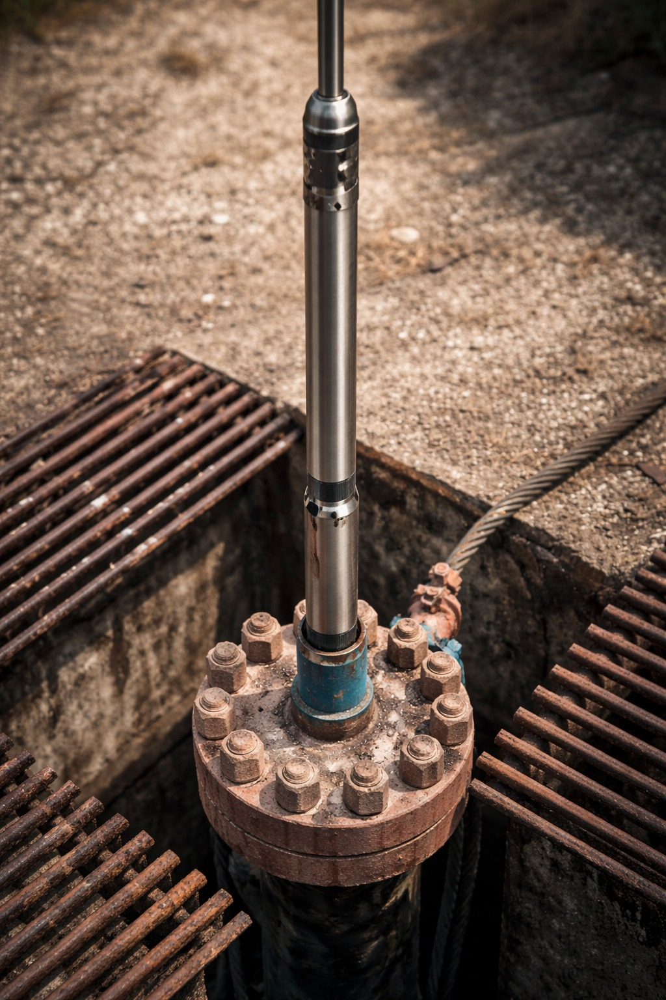

Real vaxt rejimində quyu videoinspeksiya
sistemi
NKT-ni çıxarmadan quyunu diaqnostika edin. Korroziya, deformasiya, qum, neft-su kontaktı - təmir qərarı verməzdən əvvəl hər şeyi görün.
Videoinspeksiya olmadan - baha başa gələn səhvlər
Ənənəvi diaqnostika dolayı metodlara əsaslanır. Nəticədə verilən yanlış qərarlar, quyuda işin 20+ gün dayanması və milyonlarla zərər yaranır.
Sıfır görünürlük
NKT və quyunun daxili vəziyyətini borunu çıxarmadan qiymətləndirmək mümkün deyil.
Yanlış diaqnostika
Dolayı metodlar səhv nəticələr verir - lazımsız NKT çıxarılması və əlavə xərclər.
20+ gün dayanma
Qərarlar video sübut olmadan verilir - quyu həftələrlə dayanır.
Gizli xərclər
Lazımsız çıxarılma: briqada, avadanlıq və hasilat itkisi - bütün bunlar böyük maliyyə itkisinə səbəb olur.

Qərar verməzdən əvvəl - quyunun içindən video
Kamera quyuya endirilir və real vaxtda video ötürür. Siz avadanlığın real vəziyyətini dəqiq görür və qərarları fərziyyələrə deyil, faktlara əsasən verirsiniz.
Sistem nəyi aşkar edir:
- NKT-nin daxili səthində korroziya və pitinq
- Deformasiyalar, çatlar və mexaniki zədələr
- Qum daxilolmaları və çöküntülər
- Neft-su kontaktı və fazaların ayrılması
- Parafin və asfalt çöküntüləri
- Paker və nasos avadanlığının vəziyyəti
Sistemin əsas xüsusiyyətləri
İş təzyiqi
Dərin quyularda ekstremal təzyiqə davam gətirərək funksionallığını qoruyur.
Temperatur diapazonu
Lay mühitinin yüksək temperatur şəraitində stabil işləmə təmin edir.
Kameranın baxış bucağı
110° geniş baxış bucağı NKT-nin daxili səthinin tam görüntülənməsini təmin edir.
Real vaxtda video
Videonun gecikməsiz birbaşa səthə ötürülməsi - sonradan baxışa ehtiyac yoxdur.
3 hal - qarşısı alınmış 3 səhv
Videoinspeksiya qərarverməni dəyişir: bahalı NKT çıxarılması əvəzinə dəqiq diaqnostika və hədəfli müdaxilə.
Nasos nasazlığı şübhəsi
Videoinspeksiya göstərdi ki, nasos işləkdir, problem isə yuxarı zonada lokal korroziyadır. NKT çıxarılmasına ehtiyac olmadı - 20+ gün dayanmanın qarşısı alındı.
Səbəbi bilinməyən debit azalması
Kamera NKT-nin aşağı hissəsində qum yığılmasını aşkar etdi. Yuma əməliyyatı problemi 1 günə həll etdi - planlaşdırılan 3 həftəlik avadanlıq dəyişdirilməsinə ehtiyac qalmadı.
Quyuda anormal su artımı
Video 1240 m dərinlikdə NKT-də mikroçat aşkar etdi. Tam KRS əvəzinə lokal boru dəyişdirilməsi ilə xərclər 60% azaldıldı.
Texniki xüsusiyyətlər
Sistem ağır quyu şəraitləri üçün hazırlanıb və NKT-nin əksər konfiqurasiyaları ilə uyğundur.
Texniki pasport əldə et| Parametr | Dəyər |
|---|---|
| Maksimum təzyiq | 50 MPa (500 bar) |
| İş temperaturu | +85 °C-ə qədər |
| Kameranın baxış bucağı | 110° |
| Video keyfiyyəti | Full HD 1080p |
| İşıqlandırma | Daxili LED, tənzimlənən parlaqlıq |
| Alətin diametri | 38 mm-dən başlayaraq |
| Maksimum endirmə dərinliyi | 3000 m-ə qədər |
| Məlumat ötürülməsi | Kabel vasitəsilə və ya simsiz real vaxtda |
| Yazı formatı | MP4, JPEG (time-code ilə şəkillər) |
| Uyğunluq | NKT 73 mm / 89 mm / 114 mm |
Demo və ya hesabat nümunəsi sifariş edin
Mühəndislərimiz sistemi sizə canlı göstərəcək və quyunuza uyğun texniki təklif hazırlayacaq.